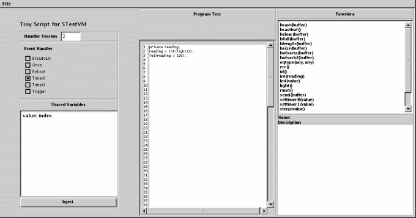

|
|
Lesson 2: An Introduction to TinyScript
Last modified: Thu Aug 26 18:53:27 PDT 2004
|
|
This lesson introduces the TinyScript
language. Using the VM from Lesson 1, you write a
series of increasingly complex programs, culminating
in one that sends a temperature reading when
filtered light readings go over a threshold.
|
|
Introduction
|
|
In Lesson 1, you installed a few scripts on
Bombilla motes. The scripts were in TinyScript,
which is a simple BASIC-like language. TinyScript is
imperative and dynamically typed. Every VM has a set
of events that it handles. Each event has a handler,
a piece of code that runs when that event
occurs. TinyScript has basic control structures,
such as loops and conditionals. Part of customizing
a VM is to include functions to support the sets of
operations an application needs.
|
|
TinyScript Structure and Variables
|
|
A TinyScript program two parts: variable
declarations and statements. All variables that a
program uses must be declared before any
statements. For example, this is CntToLeds from
Lesson 1:
| Variable Declarations |
|
private counter;
|
| Statements |
|
counter = counter +1;
led(counter % 8);
|
TinyScript has three kinds of variables: private,
shared, and buffer. Private variables are
local to a handler; only the handler that declares
the variable can access it. For example, if two
handlers both have a private variable named
counter, each one has its own, independent
variable.
In constrast, shared variables are not
unique to handlers: this allows two handlers to
share data. If two handlers both have a shared
variable named counter, it is a single
variable that they share. If one handler increments
it, the other handler will see the change.
Shared and private variables are dynamically
typed. TinyScript has two basic types: integers and
sensor readings. Sensor readings are further divided
into all of the types of sensors (a magnetometer
reading is distinct from a light
reading). "Dynamically typed" means that a program
dynamically determines the type of a variable as it
runs, rather than than a compiler or programmer
stating it at compile-time. For example:
private val;
val = 1; ! val is an integer
val = light(); ! val is now a light reading
val = magX(); ! val is now a magnetometer reading (x-axis)
Dynamic typing means that a variable can have "no
type." A variable with no type acts as the identity
(e.g., zero). For example, in the following program
the variable counter has never been used
before:
private counter; ! no type: never been used before; first execution
counter = counter + 1; ! counter takes type integer, with value 1
Types limit what operations on a variable are
valid. Sensor readings are immutable. You cannot add
an integer to a light reading, a light reading to a
temperature reading, or even two light readings. If
you want to process sensorn readings, you must turn
them into integers with the int() function.
For example:
private total;
private count;
private val;
val = light(); ! legal: val is now a light reading
val = light() / 2; ! error: cannot divide light reading by 2
val = light() + magX(); ! error: cannot add light and magX
val = light() + light(); ! error: cannot add two light readings
val = int(light()); ! legal: val is now an integer
total = total + val; ! legal: total was an int
count = count + 1; ! legal: count was an int
val = total/count; ! legal: average of readings
Finally, buffer variables are vectors of a
fixed maximum size, and are always shared. Just like
private and shared scalars, buffers are typed; a
buffer can only contain values of a single type. A
buffer's contents and type can be cleared with the
bclear() function. If a buffer has no type,
it takes the type of the first value put into
it.
buffer bufOne;
buffer bufTwo;
bclear(bufOne); ! clear bufferOne
bufOne[0] = 5; ! Put 5 in index 0: bufOne has size one, type integer
bufOne[] = id(); ! Append mote ID to bufOne, now has size two
bufOne[4] = 41; ! Put 41 in index 4; bufOne has size five,
! buf[2] and buf[3] are zero
bufOne[5] = light(); ! error: buffer is type integer, not light
bufOne[5] = int(light); ! legal: integer
bufTwo = bufOne; ! make bufTwo a copy of bufOne
|
|
Simple Sensing
|
|
To sample sensor readings, your mote must have a
sensor board. By default, Bombilla compiles for the
standard mica sensor board (micasb), and provides
sensors for light and temperature. If you have that
sensor board, it should work fine. If you are using
a different sensor board -- the mica weather board
(micawb), for example -- then you may need to rebuild and recompile
Bombilla.
As CntToLeds in Lesson 1 showed, periodic
programs in Maté usually have two scripts:
the first is what to do periodically, the second
starts the periodic execution. Instead of displaying
a counter, as in CntToLeds, the following timer
script samples the light sensor (or other sensor, if
you have a board besides micasb).
Open the "timer0.txt" file you wrote in lesson
one, and modify it to be
private reading;
reading = light();
led(reading / 128);
This displays the top three bits of the sensor
reading. Inject this with Scripter as before:
java net.tinyos.script.Scripter -comm tossim-serial timer0 timer0.txt
If Timer0 is already running (e.g., you kept your
mote on from last lesson), then this script will
start executing immediately. If you need to start
Timer0, inject "once.txt" from the previous lesson,
which calls settimer0().
You should see this error message appear at the
console:
Error received:
Context: TIMER0
Cause: TYPE_CHECK
Capsule: TIMER0
Instruction: 5
The led() function takes a value, but light()
returns a light reading: when Maté tried to
execute led() the parameter failed a type
check. When the VM encounters a run-time error, it
halts execution of all contexts, flashes the LEDs,
and periodically broadcasts an error message to the
radio and UART: the Scripter tool read it from the
UART and displayed the error. Installing new code
clears the VM from the error state (it
reboots). Change "timer0.txt" to be:
private reading;
reading = int(light());
led(reading / 128);
Inject it with Scripter. The top three bits of
the light sensor will properly display on the mote
LEDs.
|
|
Event Handlers and the Scripter GUI
|
|
All of the scripts so far have been for the Once
or Timer0 events, and only used a small number of
functions. The Bombilla VM has a wider range of
event handlers that you can use. To see the full set
of options, run Scripter with the -gui
option:
java net.tinyos.script.Scripter -gui
You should see a window similar to this:

The Scripter GUI has three major parts. The left
panel has a selection for which event handler you
which to program. The Bombilla VM has six event
handlers. They are:
- Broadcast: Runs when the
mote receives a packet broadcast by another mote
with the bcast() function.
- Once: Runs once, when it installs. You
used this event to start Timer0 in earlier parts
of the tutorial.
- Reboot: Runs after the VM reboots
(every time new code for any handler
arrives).
- Timer0: Runs when timer0 fires. The
function settimer0() sets the firing
rate.
- Timer1: Runs when timer1 fires. The
function settimer1() sets the firing
rate.
- Trigger: Runs when another handler
calls the trigger() function.
Below the handler selection is a list of all
current shared variables and buffers, and below that
is a button for injecting code.
The center panel is where you write program
text. The GUI currently limits programs to 99 lines.
The right panel displays the set of functions a VM
provides. Below the list is a text area that
displays a brief description of a function. So far,
you've used the light, id,
settimer0, and led functions.
You can load text files into the program text
area with the File menu's Load
element.
Select the Timer0 handler, enter this code in the
program window and inject it. It toggles the red
mote LED when it runs:
led(25);
Select the Timer0 handler, enter this code into
the program window and inject it. It toggles the green
mote LED when it runs:
led(26);
Finally, inject a Once handler that starts the
two Timers at different rates:
settimer0(1);
settimer1(8);
You should see the red and green LEDs blinking at
different frequencies. The description of the
led function describes how to set, turn on,
turn off, and toggle LEDs. When you're done playing
with the LEDs, inject a Once handler that stops the
timers (calls the settimer functions with zero as a
parameter).
|
|
Sensor Sampling
|
|
For the rest of the tutorial, you can either use
the Scripter GUI or its command line tool
invocation. The parameters to the command line are:
java net.tinyos.script.Scripter <handler name> <file name>
Handler name is case-insensitive (Once is
the same as once), but file name is
case-sensitive.
TinyScript has standard language control
structures, like loops and conditionals. For
example, this program puts light readings into a
buffer until it is full, the clears the
buffer. bfull returns true if a buffer is
full, false otherwise. bsize returns how
many elements are in a buffer. bclear
clears a buffer, emptying it and making it have no
type. Inject it as the Timer0 handler:
buffer data;
data[] = light(); ! This appends the reading
if bfull(data) then
bclear(data);
end if
Start Timer0 with a Once handler that calls
settimer0(2) (5 Hz). Another way to fill
the buffer (by directly indexing):
buffer data;
data[bsize(data)] = light(); ! This puts the reading at the first free element
if bfull(data) then
bclear(data);
end if
To make sure the program is doing what you think
it is, include an LED indicator of whether it's
cleared the buffer:
buffer data;
data[] = light();
if bfull(data) then
bclear(data);
led(2); ! Turn on LED 1
else
led(1); ! Turn on LED 2
end if
You should see the geen LED on, but every two
seconds it will briefly turn off and the red will
turn on.
This next script is a little more complex: when
the buffer is full, it uses a loop to pull the
highest value out of the buffer and display its top
three bits on the LEDs :
buffer data;
private i;
private size;
private max;
private val;
data[] = light();
if bfull(data) then
size = bsize(data);
max = 0;
for i=0 until i >= size ! Scan through values
val = int(data[i]);
if (val > max) then
max = val; ! Find the max
end if
next i
led(max / 128); ! Display max on LEDs
bclear(data);
else
led(0); ! Turn off the LEDs
end if
There are two basic kinds of loops in TinyScript
(as in BASIC): unconditional and conditional. The
above loop is conditional: is loops until the
condition i >= size is true. Loops can
also be unconditional, where they loop for a finite
number of steps. These loops take the form
for i=0 to x
...
next i
Where x is a constant (it cannot be a
variable). If you want to increment until a
variable, then you should use a conditional loop as
the above handler does.
By default the initialized variable (i in
the above example) increments by one on each
execution. You can change this with the
step qualifier. For example, this loops
counter from 0 to 100 in increments of
ten:
for counter=0 to 100 step 10
...
next counter
The above filtering handler is relatively long
and cumbersome: it compiles to fifty-one
bytes. Bombilla provides functions to support this
sort of processing. The functions bsorta
and bsortd sort the elements of a buffer in
ascending and descending order respectively. An
simpler version of the above program is:
buffer data;
private val;
data[] = light();
if bfull(data) then
bsortd(data); ! Sort in descending order (highest is first)
led(int(data[0]) / 128); ! Display max on LEDs
bclear(data);
else
led(0); ! Turn off the LEDs
end if
|
|
Transmitting Readings Over the UART
|
|
So far, all of the programs have been using the
LEDs to display what they're doing. Bombilla also
has functions that support communication. For
example, the uart function takes a buffer
as a parameter and sends that buffer over the mote
UART. This Timer0 handler is similar to the
filtering one above, but sends the mote ID and
reading to the UART in addition to displaying the
reading on the LEDs.
buffer data;
buffer sendBuffer;
private val;
data[] = light();
if bfull(data) then
bsortd(data);
val = int(data[0]);
bclear(sendBuffer); ! Clear out the send buffer
sendBuffer[0] = id(); ! Buffer has 2 elements: mote ID and value
sendBuffer[1] = val;
led(val / 128); ! Display top 3 bits of value
uart(sendBuffer); ! Send the buffer to the UART
bclear(data);
else
led(0);
end if
The uart function sends a TinyOS packet
containing a Maté data buffer. When you
compile a VM, it builds a Java class representing
this packet, called BufferUARTMsg. The
Maté toolchain has a tool for reading these
packets. It needs to connect to the mote, so if you
are using the Scripter GUI (which keeps its
connection open), you have to use a SerialForwarder
so both the GUI and packet reader can listen to mote
packets. That is, if you are using the GUI you
should not use -comm serial. Start the
reader with:
java net.tinyos.script.VMBufferReader
VMBufferReader has an optional -comm
parameter; by default it connects to SerialForwarder
on the local machine. If the above script is
running, you should soon see output like this:
We're connected to avrmote
Received UART buffer of type VALUE, size 2
[0][948]
Received UART buffer of type VALUE, size 2
[0][882]
Received UART buffer of type VALUE, size 2
[0][979]
Received UART buffer of type VALUE, size 2
[0][861]
Received UART buffer of type VALUE, size 2
[0][1016]
The first number (zero in the above output) is
the mote ID; the second is the sensor reading.
If you want to build your own GUIs or Java tools
on top of Maté, you'll probably be dealing
with data buffers. The source code of VMBufferReader
should be a good place to start on how to do so.
Of
course transmitting to the UART is only sort-of
useful; Maté can also send buffers up an
ad-hoc collection tree. T
|
|
Conditional Sensing
|
|
The Trigger context allows a handler to request
an asynchronous operation. When a handler calls the
trigger function (which takes a buffer as a
parameter), it triggers the Trigger handler to run
(hence its name). The passed buffer is copied to the
Trigger context, so the caller can continue
executing. Meanwhile, the Trigger handler will start
running in parallel.
We can use this behavior to write a program that
has two parts. The first is a handler that
periodically runs and filters light readings. When
the filtered value goes over a threshold, the
handler triggers the Trigger handler. The Trigger
handler then samples the temperature sensor and
sends a packet to the UART with the reading. The
periodic handler is essentially a condition ("when
filtered light is above x"), and the Trigger handler
is the action to take when the condition is
two. Putting them in separate handlers allows you to
reprogram the two individually.
Stop Timer0 and Timer1 by sending a Once handler
that calls the settimer functions with a
period of zero:
settimer0(0);
settimer1(0);
Next, install the Trigger handler. This program
samples the temperature sensor and sends a buffer
with the reading to the UART:
buffer buf;
bclear(buf);
buf[0] = temp();
led(26); ! Blink green
uart(buf);
Install a Timer0 handler that filters light
readings with an exponentially weighted moving
average (EWMA), and when that goes over a threshold
calls trigger():
private average;
buffer empty;
average = average + int(light());
average = average / 2;
led(25); ! Blink red
if (average > 600) then
trigger(empty);
end if
Finally, start Timer0 firing at 5Hz with a Once
handler:
settimer0(2);
The mote will blink its red LED on each light
sample, and blink the green LED when it sends a
temperature reading. If it isn't triggering, then
you can lower the threshold in the Timer0 handler
from 600; hopefully this should help. Note that in
the above program Trigger sends a buffer of type
TEMP (temperature readings).
This concludes Lesson 2. In the next lesson,
you'll start using the radio.
< Previous Lesson |
Next Lesson > |
Top
|
|
Incorporating Other Sensor Boards
|
|
If you have sensorboards other than the standard
mica sensor board (micasb), then you need to rebuild
and recompile Bombilla to support your board. This
requires modifying the VM specification file. Lesson 4 has details on
doing this, but here we'll just change it in a very
limited fashion.
Maté currently supports the mica sensor
board (micasb) and the basic sensor board
(basicsb). We hope to support additional boards in
the future. Lesson 5
shows how Maté can be extended to support
additional boards. Making Bombilla use a different
sensor board requires changing the VM specification
file.
Open the Bombilla VM specification file
bombilla.vmsf in a text editor. It resides
in the samples subdirectory of
lib/VM The fifth line of the file says
<LOAD FILE="../sensorboards/micasb.vmsf">
Depending on what board you want, the line to:
|
basic sensor board (basicsb):
|
<LOAD FILE="../sensorboards/basicsb.vmsf">
|
telos onboard sensors:
|
<LOAD FILE="../sensorboards/telos.vmsf">
|
Basically, change the name of the vmsf file to
the sensorboard. This will automatically include
functions for all of the sensorboard's sensors. If
this means that you have functions for sensors that
are not populated on your board (e.g., you do not
have a magnetometer on your micasb), don't worry
about it. In the long term -- say, you were
deploying a Maté network -- you may want to
not include them, but for the sake of the tutorial
it's not an issue.
Once you have made this change, rebuild
Bombilla. Remember that this must be done from
the samples directory:
java net.tinyos.script.VMBuilder -nw bombilla.vmsf
Then, go to apps/Bombilla and recompile
the VM for your hardware.
These are the sensors the various sensor boards
provide:
| micasb |
basicsb |
telos |
| accelX |
light |
photoactive |
| accelY |
temp |
totalsolar |
| light |
|
humidity |
| magX |
|
temperature |
| magY |
|
| mic |
|
| temp |
|
Note that some Telos motes do not have their
sensors populated. This causes the
totalsolar and photoactive sensors
to return bogus values: they are simple ADC
captures. In contrast, the humidity and
temperature functions interact with digital
sensors over a bus; if they are not populated, the
VM will enter an error state.
|
|